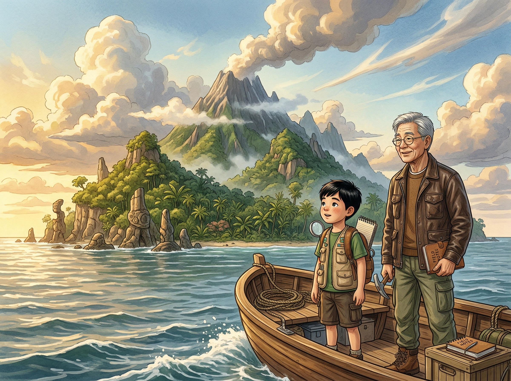
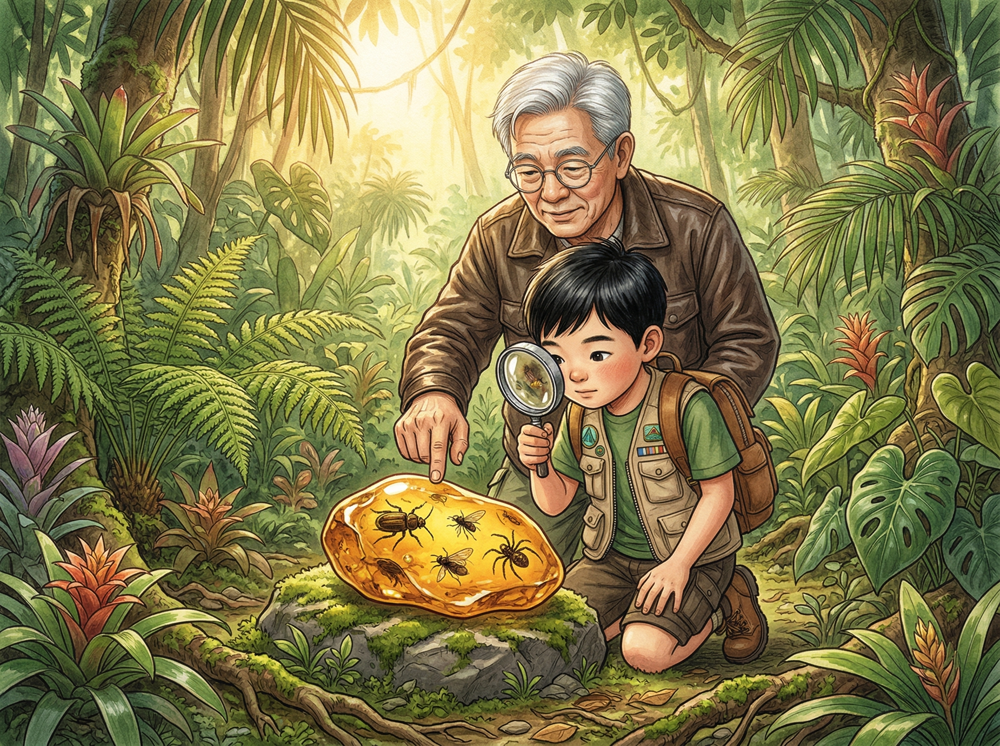
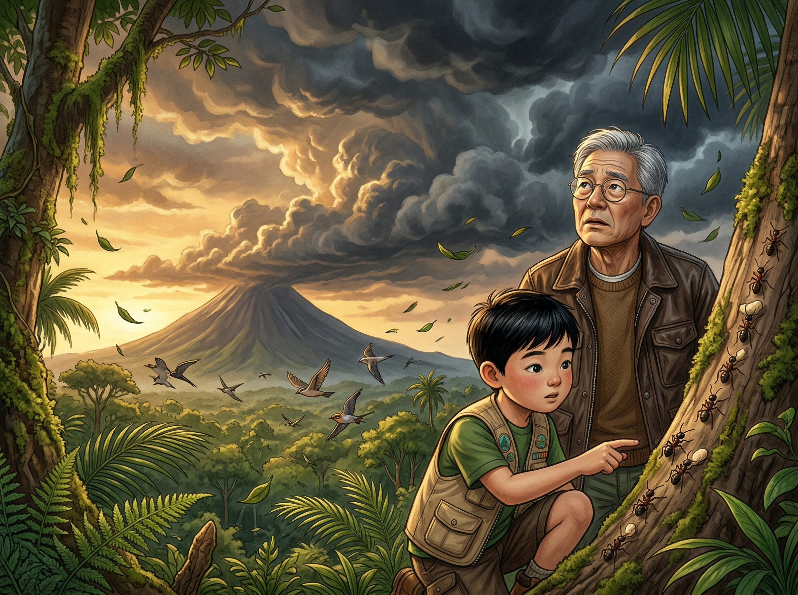
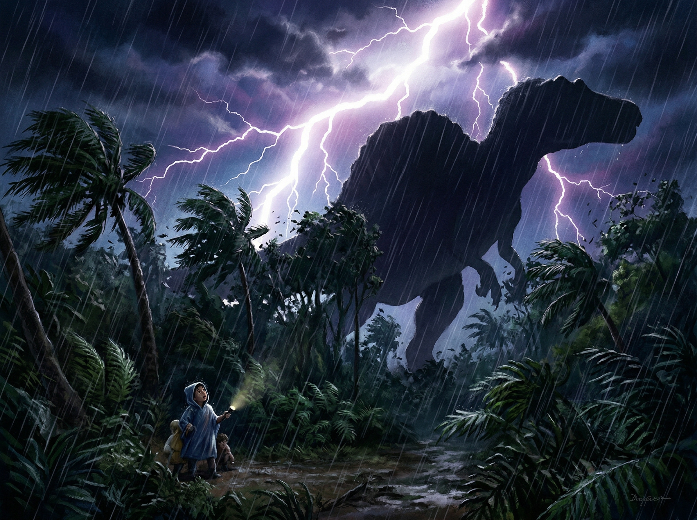

🦴 ×
0
‹
›
⛈️ 第一章
暴风雨来了
天气信号 · 闪电与雷声 · 气压变化

七岁的
Ian
和爷爷坐着小船，
向一座神秘的小岛驶去。
👴 "这座岛上有很多
化石
（fossil），
也许能找到几百万年前的恐龙骨头！"

在丛林深处，Ian发现了一块
金灿灿的
琥珀
（amber）。
🧒 "爷爷快看！里面有一只虫子！
它被困在里面好久好久了吧？"
🔬 科学时间
🧬 每个生命体内都有一本"说明书"，叫做
DNA
。
DNA告诉身体该长什么样子——
高还是矮、什么颜色、长几条腿。
琥珀可以保存昆虫
几千万年
！
但里面的DNA会慢慢碎掉……
🎬 电影里从琥珀里的蚊子血复活恐龙？
其实做不到
——6500万年后DNA早就碎成渣了！
🧬 DNA是什么？
A. 生命体内的"说明书"
B. 一种很硬的石头
C. 一种恐龙的食物

就在这时，Ian注意到奇怪的事：
蚂蚁
排着长队往高处搬家，
鸟群
贴着地面低飞。
👴 "Ian，这些是
暴风雨的信号
！
动物能感觉到
气压
（air pressure）下降——
它们比天气预报还准！"
🌤️ 自然信号
🐜 蚂蚁搬家到高处 → 要下大雨了
🐦 鸟群低飞 → 空气中水汽重，飞不高
☁️ 云变成
铁砧形状
（anvil shape） → 积雨云，暴风雨来了！
气压
就像空气的重量。
暴风雨前气压会下降，动物的身体能感觉到！
⚡
闪电小知识
：看到闪电后，开始数秒——
每
3秒
=闪电在
1公里
外
（因为光速比声速快太多了！）
🔗 把自然信号和含义连起来！
🐜 蚂蚁搬家
⚡ 闪电后6秒听到雷
🐦 鸟群低飞
空气水汽重
要下大雨了
闪电在2公里外
暴风雨来了！天空被乌云吞没，
闪电撕裂天空，雨水像瀑布一样倾泻。
Ian紧紧抓住爷爷的手。
突然——
轰！
不是雷声。地面在
震动
。
一棵大树被撞倒了——
可是……附近没有什么东西啊？

闪电照亮了远处的树冠——
一个
巨大的影子
在树林间移动。
那个轮廓……像是一只
恐龙
？！
🧒 "爷爷……那是什么？！"
👴 "不可能……它们应该灭绝了……"
📚 你学到了什么
✅
DNA
是生命的"说明书"，但会随时间降解
✅ 动物能感知
气压变化
，预报天气
✅ 闪电后数3秒=1公里（
光速
比声速快）
✅
琥珀
能保存昆虫百万年
🪶 下一章：羽毛猎手 →
📖 目录